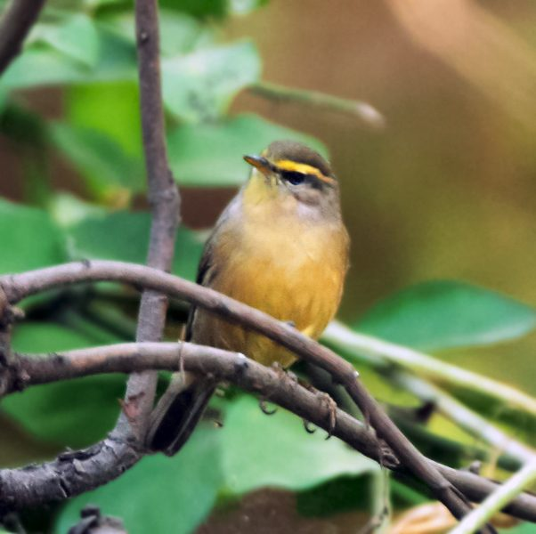

पीत-उदर फुदकीSulphur-bellied Warbler
Phylloscopus griseolus · Phylloscopidae · BRD-0279

- Scientific name वैज्ञानिक नाम
- Phylloscopus griseolus Blyth, 1847
- Family कुल
- Phylloscopidae
- Hindi हिंदी
- पीत-उदर फुदकी
- Local names स्थानीय नाम
- sulphur-bellied warbler, olivaceous leaf warbler, sulphur-bellied leaf-warbler
- Status here यहाँ की स्थिति
- native
- Movement आवागमन
- Migrant
- Known from कहाँ दर्ज
- Others have published records from the Basti–Ayodhya districts बस्ती–अयोध्या के ज़िलों से दूसरों के प्रकाशित अभिलेख
- IUCN IUCN
- not evaluated
- Review समीक्षा
- not yet reviewed
When to look कब देखें
Migrant प्रवासी. Expected mainly in October, November, December, January, February, March. मुख्यतः अक्टूबर, नवंबर, दिसंबर, जनवरी, फ़रवरी, मार्च में अपेक्षित।
Breeds in rocky, scrubby slopes of the western Himalayas and Central Asia; winters in central and northern India, visiting dry scrub and rocky groves in the Gangetic plain from September/October to March/April (Rasmussen & Anderton 2012). All migrants and visitors →
Tell it apart from इनसे अलग पहचानें
पीत-उदर फुदकी / Sulphur-bellied Warbler
Phylloscopus griseolus Blyth, 1847 — Phylloscopidae
पीत-उदर फुदकी — मध्य एशिया और पश्चिमी हिमालय से सर्दियों में मैदानों में आने वाली एक विशिष्ट पत्ता फुदकी, जो पेड़ों के बजाय पत्थरों, बीहड़ों और पुरानी दीवारों पर फुदकती है और जिसका पेट चमकीला गंधक जैसा पीला होता है।
Quick Identification त्वरित पहचान
| Feature | Description |
|---|---|
| Upperparts | Uniform dull earthy greyish-brown without olive or green tones |
| Underparts | Vivid sulphur-yellow to deep mustard-yellow from throat across entire belly |
| Supercilium | Long, prominent, bright yellow eyebrow extending well behind the eye |
| Eye-stripe | Dark dusky line passing through the eye, accentuating the bright supercilium |
| Rupicolous habit | Hops actively on rocks, stone walls, and tree trunks rather than in leafy canopies |
Stocky, rock-dwelling leaf warbler unmistakable by its bright sulphur-yellow underparts contrasting with dull earthy-brown upperparts. A long, bold bright yellow supercilium extends past the eye, bordered below by a dark eye-stripe. Unlike other leaf warblers that flit in tree foliage, it habitually creeps and hops on boulders, rock faces, crumbling brick masonry, and bare lower branches.
हिंदी: पत्थरों और पुरानी दीवारों पर फुदकने वाली चिड़िया। ऊपरी शरीर मटमैला भूरा और पूरा पेट चमकीला गंधक जैसा पीला होता है। आंख के ऊपर लंबी चमकीली पीली भौंह होती है।
Morphology शारीरिक संरचना
| Feature | Description | Source |
|---|---|---|
| Upperparts color | Plain dull earthy greyish-brown lacking greenish wash | Rasmussen & Anderton (2012) |
| Underparts color | Vivid mustard-yellow to sulphur-yellow across throat, breast, and belly | Rasmussen & Anderton (2012) |
| Facial markings | Striking bright yellow supercilium and contrasting dark brown eye-stripe | Grimmett et al. (2011) |
The adult plumage shows entirely uniform dull earthy greyish-brown upperparts from the forehead to the tail coverts, completely lacking olive or greenish hues. The lores and a distinct streak behind the eye are dusky-brown, creating sharp contrast with a long, prominent, brilliant yellow supercilium that starts near the bill base and arches back past the ear coverts. The entire underparts, from chin and throat to the lower belly and undertail coverts, are rich sulphur-yellow with a slight ochraceous-buff wash across the breast and flanks. The bill is relatively stout and dark horn-brown, with a dull yellowish base to the lower mandible. Legs and feet are dark brownish-slate; iris dark brown. Sexes appear identical.
Vocalisations. Very vocal on its wintering grounds, uttering a loud, sharp, metallic, sparrow-like clicking chirp rendered as chiv, twit, or tshik. In mild agitation, it repeats a rapid clicking alarm call pit-pit-pit.
हिंदी: सिर और पीठ का रंग फीका मटमैला भूरा होता है जबकि गला और पेट गहरा चमकीला पीला होता है। आंख पर पीली भौंह बहुत साफ दिखती है। इसकी आवाज गौरैया जैसी तेज 'चिव-चिव' होती है।
Behaviour & Ecology व्यवहार एवं पारिस्थितिकी
An exceptional leaf warbler in its rupicolous habits: while most congeners are arboreal canopy flutterers, this species spends most of its foraging time investigating stony ground, boulder crevices, railway ballast, dry ravines, and the trunks of rough-barked trees. It hops with agility along vertical stone faces and crumbling walls, flicking its tail and cocking its head to peer into fissures. In winter quarters, it maintains a small, solitary feeding territory, returning daily to the same brick structures, rocky outcrops, or thorn bushes.
हिंदी: यह अन्य फुदकियों की तरह पेड़ों के पत्तों में रहने के बजाय पत्थरों, चट्टानों, ईंटों की दीवारों और बीहड़ों की दरारों में कीड़े खोजती है। यह बहुत फुर्ती से पत्थरों पर चढ़ती है।
Life Cycle / Phenology जीवन चक्र एवं फेनोलॉजी
Breeds in the subalpine scrub and stony scree slopes of Central Asia and the western Himalayas from 2,400 to 4,000 m elevation between May and July. The nest is a domed ball woven from dry grass blades, bark fibers, and rootlets, lined with mammal fur and feathers, tucked into a rock cleft or low thorny bush (Ali & Ripley 1983). Clutch contains 4 to 5 white eggs speckled with reddish-brown (Ali & Ripley 1983). Following breeding, birds migrate down into the Indian peninsula and northern plains, arriving in eastern Uttar Pradesh by October and departing back to high altitudes by late March (Rasmussen & Anderton 2012).
हिंदी: यह गर्मियों में हिमालय और मध्य एशिया की ऊंची पथरीली पहाड़ियों पर घोंसला बनाती है। सर्दियों में अक्टूबर से मार्च के बीच यह मैदानी और बीहड़ वाले इलाकों में प्रवास करती है।
Diet and Feeding Behaviour आहार एवं भोजन व्यवहार
Strictly insectivorous. It systematically inspects rocky crevices, wall fissures, bark furrows, and low scrub foliage. Prey consists of small beetles, ants, weevils, small spiders, dipteran flies, and insect pupae hiding in rock hollows. It frequently reaches deep into stone cracks with its stout bill to pry out dormant overwintering insects that arboreal warblers cannot access.
हिंदी: इसका मुख्य भोजन पत्थरों और दीवारों की दरारों में छिपे छोटे भृंग, चींटियां, मकड़ियां और मक्खियां हैं। यह अपनी मजबूत चोंच से पत्थरों के छेदों से कीड़े निकालती है।
Predators / Natural Enemies प्राकृतिक शत्रु एवं शिकारी
Because it moves actively along exposed rocks and low walls, it faces predation from small terrestrial and aerial carnivores. Common predators include the Shikra (Accipiter badius), Indian gray mongoose (Herpestes smithii), and feral cats (Felis catus). At the slightest suspicion of danger, it dashes instantly into deep rock cavities or dense thorny brambles.
हिंदी: खुले पत्थरों और दीवारों पर फुदकने के कारण इसे शिकारी पक्षियों जैसे शिकरा और जंगली बिल्लियों से खतरा रहता है। खतरा देखते ही यह तुरंत पत्थरों की दरारों में छिप जाती है।
Agricultural / Human Relevance कृषि एवं मानव उपयोगिता
Harmless to crops and highly beneficial in rural landscapes by devouring overwintering agricultural pests that shelter inside dry stone embankments, canal brickwork, and boundary walls. Its preference for crevices makes it an effective biological control agent for hidden pest stages during the dormant winter months.
हिंदी: यह नहर की पटरियों, ईंट-भट्ठों और खेतों की दीवारों में शरण लेने वाले हानिकारक कीटों और उनके अंडों को खाकर प्राकृतिक सफाईकर्मी का काम करती है।
Expected Locally क्षेत्रीय संभावना
Not a field record. Written from published accounts for eastern Uttar Pradesh. No confirmed local sighting yet — if you have seen it, that is what the atlas needs.
अभी तक स्थानीय पुष्टि नहीं। यह विवरण प्रकाशित स्रोतों से है, किसी अवलोकन से नहीं।
GBIF holds published records from rocky terrains, ravines, and scrub tracts of northern and eastern Uttar Pradesh. It is expected as an uncommon winter visitor to old masonry structures, brick kiln ruins, dry ravine slopes along the Ghaghara, and rocky railway embankments between late October and March. A confirmed local record requires a clear photograph showing the sulphur-yellow belly, yellow eyebrow, and rock-perching habit along with observation date and location.
हिंदी: यह सर्दियों में पूर्वी उत्तर प्रदेश के बीहड़ों, पुरानी ऐतिहासिक इमारतों और ईंट-भट्ठों के आसपास संभावित है। पुष्टि के लिए पीले पेट और भौंह की स्पष्ट तस्वीर चाहिए।
Distribution वितरण
Breeds across Central Asia, Afghanistan, northern Pakistan, and the western Himalayas (Kashmir, Ladakh, Himachal Pradesh). In winter, it descends across peninsular and northern India, wintering in dry stony tracts of Rajasthan, Gujarat, Madhya Pradesh, and across the Gangetic plains.
हिंदी: यह मध्य एशिया और पश्चिमी हिमालय में प्रजनन करती है और सर्दियों में मध्य तथा उत्तरी भारत के सूखे पथरीले मैदानों में प्रवास करती है।
Research Questions शोध प्रश्न
- What structural substrates (old brickwork, limestone boulders, or dry ravines) are most frequently utilized in eastern Uttar Pradesh winter territories?
- How strictly do individual birds maintain site fidelity to the exact same wintering territory across consecutive years?
- What is the daily foraging time allocated to rock crevices versus tree trunk bark in agricultural margins?
- At what precise dates do birds arrive in Awadh in autumn, and when is the spring departure completed?
- क्या यह हर साल सर्दियों में एक ही पुरानी इमारत या पत्थर के टीले पर लौटकर आती है?
- क्या ग्रामीण क्षेत्रों में पुराने पक्के कुओं और खंडहरों के हटने से इसके शीतकालीन वास पर असर पड़ रहा है?
Similar Species समान प्रजातियाँ
| Similar species | Distinction | Hindi distinction | |
|---|---|---|---|
| Tickell's Leaf Warbler \ | Phylloscopus affinis | Olive-green upperparts; arboreal foliage gleaner; underparts bright yellow with greenish wash on flanks | टिकेल की पत्ता फुदकी की पीठ जैतूनी हरी होती है और यह पत्थरों के बजाय पेड़ों के पत्तों में रहती है |
| Common Chiffchaff \ | Phylloscopus collybita | Dull greyish-olive above, dingy buffy-white below without sulphur-yellow; constantly dips tail | कॉमन चिफ़चैफ़ की पीठ जैतूनी और पेट मटमैला सफेद होता है, इसमें चमकीला पीला रंग नहीं होता |
| Greenish Warbler \ | Phylloscopus trochiloides | Bright olive-green upperparts with single pale wing-bar; whitish underparts; active canopy flitter | ग्रीनिश वॉर्बलर की पीठ हरी होती है, पंख पर एक सफेद पट्टी होती है और पेट सफेद होता है |
Field rule: Rock-dwelling warbler with dull earthy-brown upperparts, vivid sulphur-yellow underparts, and long bright yellow eyebrow.
हिंदी: पत्थरों पर फुदकने वाली फुदकी; मटमैली भूरी पीठ, गहरा चमकीला पीला पेट और आंख के ऊपर लंबी पीली भौंह।
Taxonomy & Classification वर्गिकी एवं वर्गीकरण
Original description. Blyth (1847), Journal of the Asiatic Society of Bengal, 16, p. 443; type locality: Hugli river, near Calcutta, India.
Subspecies. Monotypic species throughout its breeding and wintering range across Central and South Asia.
Family and order placement. Placed in the leaf warbler family Phylloscopidae, order Passeriformes.
IUCN status rationale. Not evaluated by the IUCN Red List; widely distributed across high-altitude Central Asia with large, stable populations.
हिंदी: एडवर्ड ब्लीथ ने 1847 में इसका पहला वैज्ञानिक विवरण दिया था। यह पत्ता फुदकी कुल (फिलोस्कोपिडे) का सदस्य है और खुले शुष्क भूभागों में प्रवास करता है।
Photo Gallery फोटो गैलरी
No photos yet — add field photos to media/species/sulphur_bellied_warbler/ and run node scripts/sync_photos.js.
Photos needed आवश्यक फोटो
- [ ] Adult perched on exposed rock face or stone wall displaying vivid sulphur-yellow underparts (चट्टान या दीवार पर बैठी चिड़िया के पीले पेट का स्पष्ट दृश्य)
- [ ] Close-up of head highlighting long bright yellow supercilium and dark eye-stripe (लंबी पीली भौंह और काली आंख की पट्टी का क्लोज-अप दृश्य)
- [ ] Individual hopping along rough bark of tree trunk searching for insects (पेड़ के तने की छाल पर कीड़े तलाशती फुदकी का दृश्य)
- [ ] Foraging in dry eroded ravine along river terrace (नदी के किनारे सूखे बीहड़ में भोजन तलाशते हुए दृश्य)
- [ ] Typical dry rocky winter habitat featuring ancient brickwork or stony embankment (पुरानी ईंटों या पत्थरों वाले शीतकालीन प्राकृतिक वास का परिदृश्य)
References संदर्भ
- Original description: Blyth, 1847 — see GBIF.
- Grimmett, R., Inskipp, C. & Inskipp, T. (2011). Birds of the Indian Subcontinent. Christopher Helm, London.
- Rasmussen, P. C. & Anderton, J. C. (2012). Birds of South Asia: The Ripley Guide. Vols. 1 and 2. Lynx Edicions, Barcelona.
- Ali, S. & Ripley, S. D. (1983). Handbook of the Birds of India and Pakistan. Compact ed. Oxford University Press, New Delhi.
- GBIF Occurrence Data — Phylloscopus griseolus, India (2025).
Source file: species/fauna/birds/sulphur_bellied_warbler.md